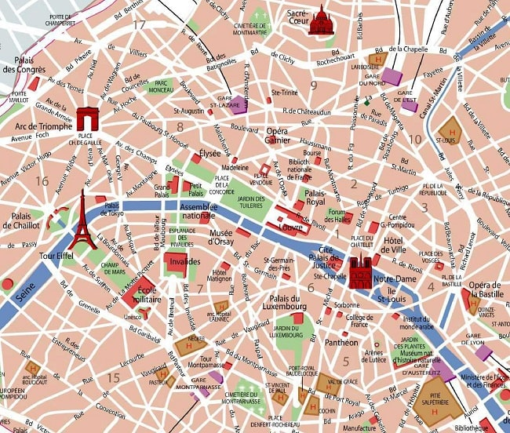

Ruta de los Impresionistas

Mapa Interactivo
Descripción de la ruta
Explora los paisajes que inspiraron a Monet, Renoir y Degas. Esta ruta te llevará por los barrios de Montmartre y las orillas del Sena, donde nació el movimiento que cambió la historia del arte para siempre.